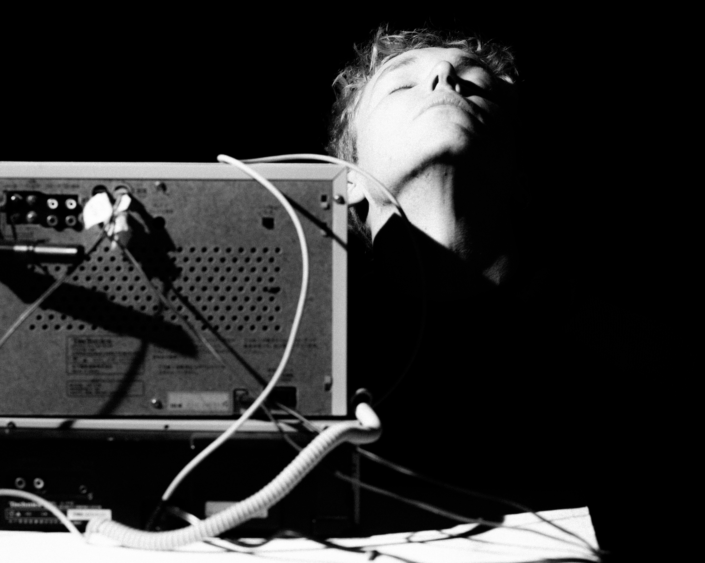

01
Никита Меньшов
DJ · SOUND DIRECTOR
Диджей и саунд-директор международного уровня. Член TOP15MOSCOW и жюри TOP100AWARDS, 500+ событий, аудитории до 6000 человек. Работал с Yandex, Т-Банк, Setters и ведущими свадебными агентствами Москвы, регулярно играет за рубежом. Не боится показать музыку, которую ещё не слышали.